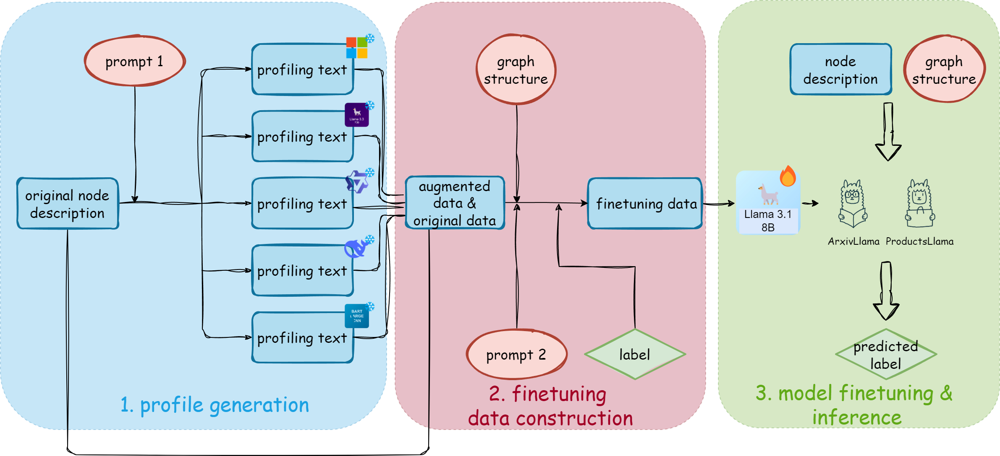

Publications
LLM Profiling and Fine-Tuning with Limited Neighbor Information for Node Classification on Text-Attributed Graphs
We combine LLM-generated text augmentation with limited neighbor information to improve node classification on large text-attributed graphs. This approach can support better organization of scientific literature and product information, helping people discover relevant knowledge and resources.

Teaching Support
Brandeis University
- COSI104a: Introduction to Machine Learning (2026 Spring)
- COSI114a: Fundamentals of Natural Language Processing I (2025 Fall)
Worcester Polytechnic Institute
- CS573: Data Visualization (2025 Spring)
- CS5084: Introduction to Algorithms: Design and Analysis (2024 Fall)
Get in Touch
If you are interested in my research or potential collaboration, feel free to reach out to me via email. Alternatively, you can leave me a message using the form below.